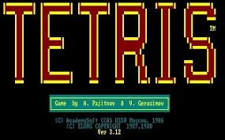

[TETRIS]
A brief history of an icon.

The underground king of gaming.
A Run To Remember
From humble beginnings to "required reading" for an entire culture. Here's a brief history of the game's journey.
- 1985 - one day, a young Russian software engineer (Alexey Pajitnov) got bored and coded a game
- 1987 - Tetris ™ is born, sparking the worldwide phenomenon
- 1988 - Legal battles regarding licencing begin
- 1996 - The Tetris Company is founded, managing the brand and licencing of it to third parties.
- 2023 - Tetris makes it's debut on the silver screen
- 2023 - a teenage boy becomes the first person in history to reach the kill screen
You should sit in meditation for 20 minutes a day, unless you're too busy, then you should sit for an hour. If Tetris has taught me anything, it's that errors pile up & accomplishments disappear. Everybody has a plan until they get punched in the mouth.-- Mike Tyson